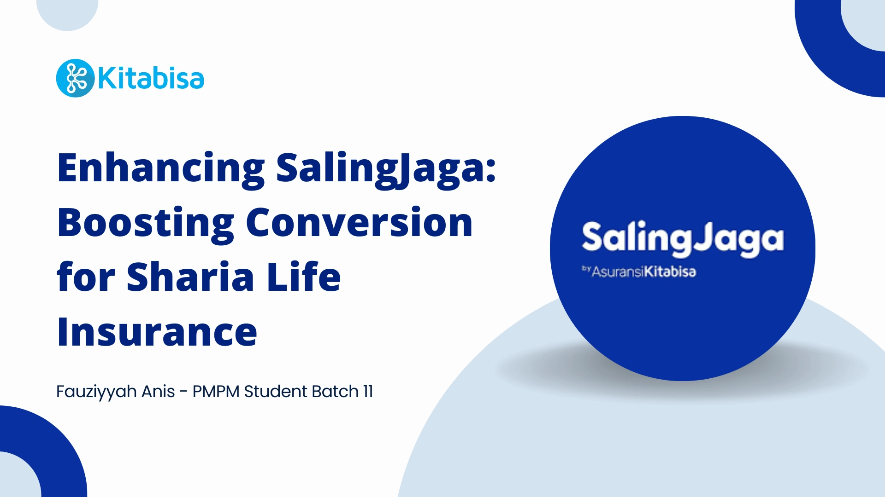
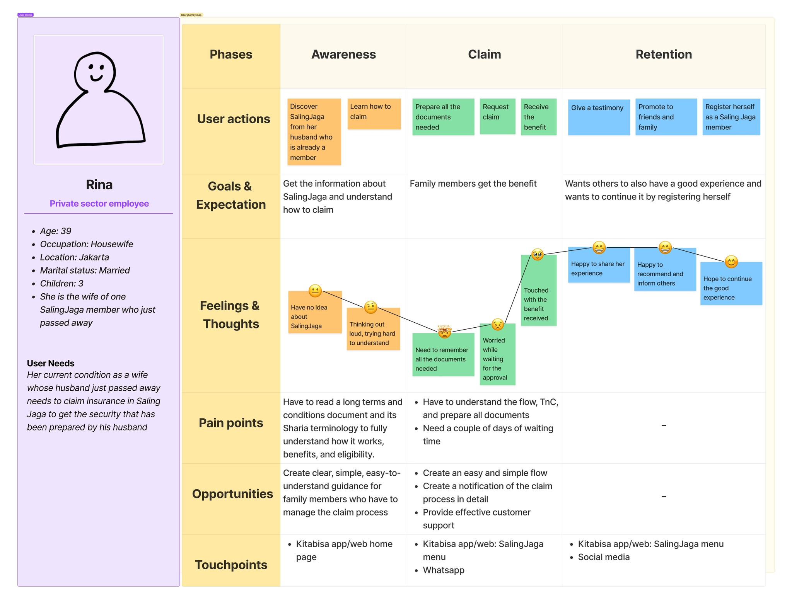
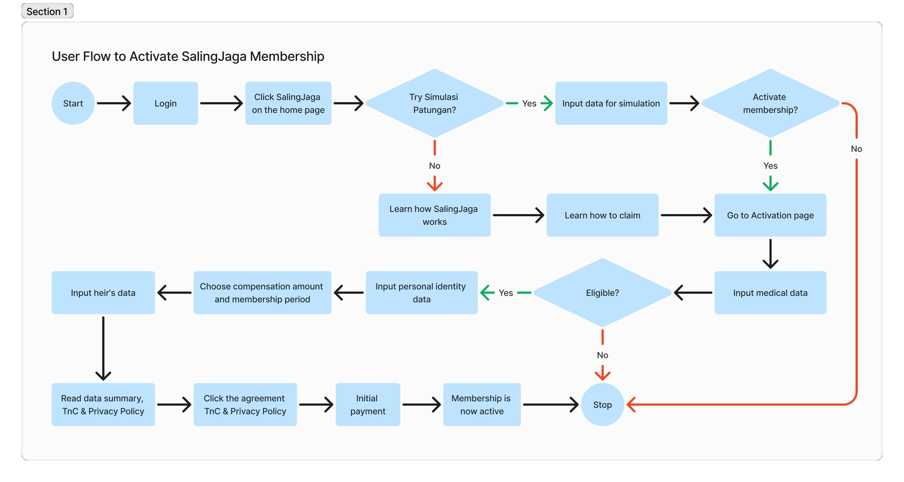
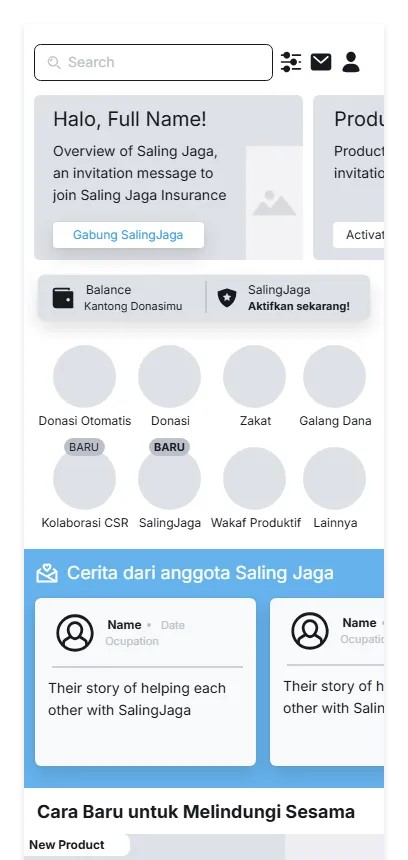
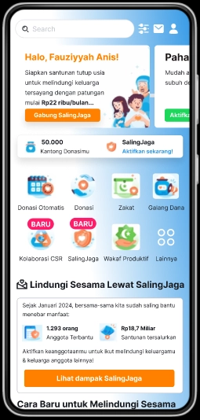

I worked on a dummy case study focused on increasing the conversion rate from crowdfunding users to Sharia life insurance users on Kitabisa. I analyzed the problem and its root causes, conducted both quantitative and qualitative problem validation, developed a prototype to address the identified issues, practiced usability testing, and created sprint planning. All product requirements are documented in the Product Requirements Document (PRD) below.
View Product Requirements Document (PRD) →
Tools

Kitabisa as a crowdfunding platform in Indonesia with at least 8 million users, saw the potential to expand its services into Sharia life insurance with a product called SalingJaga, which follows the concept of mutual help through membership fund collection. However, Kitabisa faced the challenge of a low conversion rate from crowdfunding users to Sharia life insurance users.
Before jumping into problem identification, I tried to understand the business by identifying the market and creating an OKR.
Customer Needs/Pain Points:
Value Proposition:
Providing easy-access financial security by giving compensation to the family left behind through mutual help via a community collective fund aligned with Sharia law.
Ideal Customer Profile:
Kitabisa donors aged 17–60 years who regularly make donations at least once a month.
Click here to read more about the market sizing and OKR →
As a starting point, I tried to understand the problem by identifying all the possible root causes of the low conversion rate. The three main causes I identified were:
For more detail, click here for the issue tree.
To validate the root-cause assumptions, I conducted a quantitative analysis by visualizing and analyzing user data. Based on the analysis, I identified the following findings:
Click here for more details on the data insights and recommendations.
After conducting quantitative problem validation, I conducted qualitative validation by interviewing users to gain a deeper understanding of their behavior and experience while using Kitabisa.
I found that most users first discovered Kitabisa through Instagram. However, the content they encountered primarily promoted donation services. Additionally, users typically open the app with a specific goal in mind, such as making a donation or paying zakat. Once they have completed their intended task, they feel satisfied and do not feel the need to explore other services available on the platform.
Read more for detailed interview questions and answers, findings, and recommendations.
To better understand the user experience and identify areas for improvement, particularly in using the SalingJaga service, I created two Customer Journey Maps (CJMs). The first map focuses on existing Kitabisa users who are not yet SalingJaga members, while the second focuses on the families of SalingJaga members who need to manage the claim process.
_update.webp)

Click here to explore the pain points and opportunities identified while creating the CJMs.
After conducting user research and creating the Customer Journey Maps, the next step was to improve the product by developing the information architecture, user flow, and wireframes based on identified user needs. Here are the key improvements I made:


Click here to explore the information architecture, user flows, and wireframes in more detail.
After completing the wireframe, the next step was to turn the wireframe into an interactive prototype. I made one small adjustment to the prototype: I changed the SalingJaga member testimonials section on the home page to a SalingJaga impact section. The purpose remains the same— to highlight SalingJaga—but the content was adjusted to focus more on the impact of the service rather than member testimonials.

Want to try the prototype? Click here!